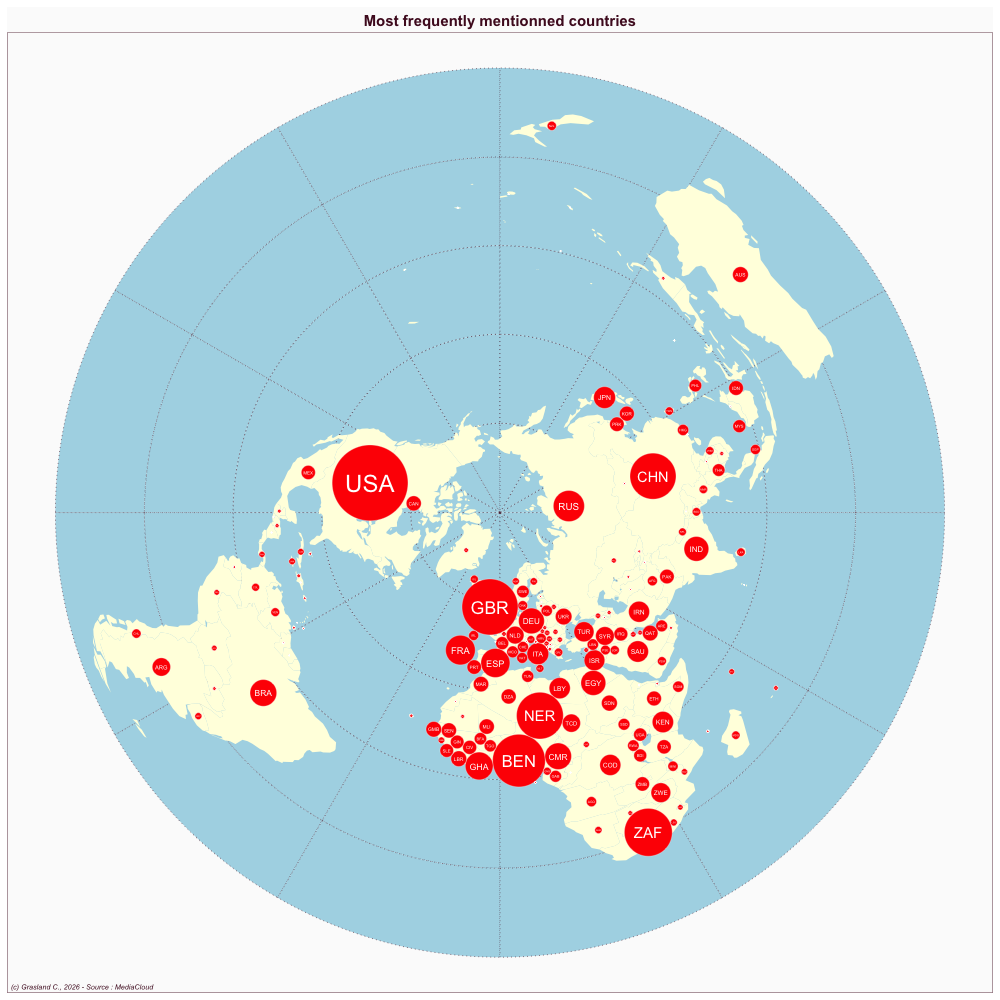

Nigeria
- Website : Vanguard
Scale
- Global
- National
Topics
- General news
- Political news
- Economic news
Publications
Brown NJ, Udomisor IW. 2015. Evaluation of political news reportage in nigeria’s vanguard and the guardian newspapers. Advances in journalism and communication 3: 10–18